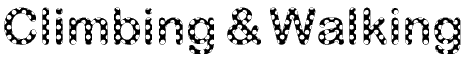
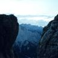
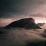
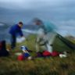
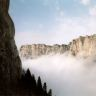

| Jim's Site | |

Last Updated: Mon Jun 30 20:34:09 BST 2008
Mont Aiguille is an impressive pillar of rock. It stands next to, but detached from, the surrounding limestone escarpment. It's large flat summit is guarded by 1000ft walls on all sides, themselves perched on top of a conical base rising another 1000ft above the valley floor.
It is a mountain that has shaped history. First mentioned in 1211 by an Englishman residing in Provence in a work dedicated to Emperor Otho the Fourth. He remarked on the inaccessibility of it's summit plateau. Almost three hundred years later in 1492 King Charles VIII of France was riding in the area, and commanded his steward Antoine de Ville to climb the mountain and plant the royal flag on the summit. The steward set off with nine others (including a royal messenger, a hunter, two priests and a lawyer). Equipped with ropes, ladders, timber and engins mirifiques (whatever they are) they succeeded in climbing the mountain in only six days. Topping out two weeks before Columbus set sail for the New World. This ascent was to mark the birth of alpinism.
I first became aware of Mont Aiguille in October 1992, five hundred years after the first ascent and one year after my first rock climb. Two years after that Steve was going to Grenoble, 25 miles North of Mont Aiguille, and allowed me to tag along.
1st September 1994
In 1994 Will, Steve, Mark and I got about half way up the Voie Normale in gathering mist and rain before we decided that it was not going to be an enlightening experience. We turned round at La Vierge (literally "The Virgin" - a large pinnacle about half way up the route) and abseiled back to the base of the climb. It was disappointing, but the climb would have been spoiled if it had been reduced to a damp thrash to a mist enshrouded summit and a quick retreat. I had wanted to see the meadow on the summit and to enjoy the isolation of the detached pinnacle, to revel in the joy of the ascent, not just grab a quick tick and beat a hasty retreat. It was not to be that damp September day, but I hoped one day to return and complete the climb in style.
30th July 1998
Another four years passed and I was returning to Grenoble for Mark's wedding. Another wedding guest and climber, Simon, had spent a week in the Vercors on an "off-site" with work a couple of years previously. He had been staying in a small village only a few miles south of Mont Aiguille and had spent much of the meetings gazing up at the impressive peak. He too had vowed to return and climb this mountain.
Any plans for an Alpine start were scuppered by the fact Simon and Ruth, his wife and fellow climber, didn't turn up in Grenoble 'til 1:30am. No-one (including me) was too keen on my suggestion that we head out immediately and camp somewhere near the mountain and attempt an early ascent the following day to beat the stifling heat and the queues. Instead we slept late in Mark's flat and didn't set out for the supermarket until 11:30am.
Mark had lent me a climbing guide to the Vercors. All the route descriptions
were in French, but there were a couple of useful topo diagrams. On the
attempted ascent in 1994 I had not been driver or navigator, so didn't have a
clear recollection of where we started the approach.
"Start from Richardiere", Mark had said, so that was where we
headed.
After getting slightly lost joining the RN75 from Grenoble, and further delayed by traffic constructing a new Autoroute it was 4pm before we arrived at Richardiere. Ruth went into a hotel to try and find a weather forecast, and returned with a newspaper. We had a quick look at the weather symbols and decided that nothing untoward was going to happen on the meteorological front.
We carried on beyond the village and drove up a dirt road. I remembered that on my previous trip we had driven some distance up a dirt road before leaving the car in a clearing and continuing to the Col de l'Aupet on foot. This time things seemed a little different, but I put it down to the passage of time and the difference in weather. Last time we had approached the peak under an overcast and drizzling sky with the sheer walls of the mountain rising into a thickening mist. This time the peak stood out boldly against a clear blue sky, shining in the sun. Conditions were perfect, the heat of the day was subsiding, the sky was clear and blue and the mountain shone in the sun. We had to go for it.
Shortly we arrived in a clearing with a couple of other cars parked in it. It didn't look familiar, but was obviously the right place. We opened the car and started spreading climbing gear and food all over the clearing. While we were deciding what to take with us, a group of three, wearing climbing harnesses, returned to one of the cars. A stilted conversation in Franglais ensued. They had just returned from the Voie Normale and doubted our plan to make it up and down before dark. One of them encouraged us to bivvy on the summit and make the descent the following day. I had suggested this, half jokingly before, but we hadn't really given it serious consideration. We discussed it briefly and decided it seemed like the most sensible option. Conditions right now were perfect, an evening ascent would give us more pleasant conditions and bivvying on the summit meant we would have more time to enjoy the ascent. More importantly, in my mind, what if the cloud was down tomorrow? Last Sunday had been a beautiful day, but Monday was wet and miserable. A descent in the mist would be a price worth paying for a perfect ascent.
My mind was made up, we should go up tonight and return tomorrow. Simon and Ruth concurred. Although my sleeping bag was in the car it was too big for me to consider carrying up the route, so instead I shoved an extra top and pair of trousers in my pack. Simon and Ruth had smaller sleeping bags that would be OK to take up the climb. We took a tent flysheet for the bivvy, some bread and cheese, bananas, tomatoes, six litres of water and assorted cereal bars to sustain us until the morning.
With our supplies and climbing gear stowed in our sacks we set off to begin
the route. It was now 6pm we would have to hurry to reach the top before
dark.
"Do you think we can make it to the Col in an hour?" I asked.
"We'd better do." replied Simon.
The dirt track continued, increasingly steep, winding and
unfamiliar. After a short while we came to a track, marked with red and
white paint leading off to the right.
"Down here?" said Simon.
"Last time we stuck to the road" I replied.
So we carried on up the steepening track. After another ten minutes or so
the bulldozed road ended in a pile of rubble, with no continuation
path. Bollocks. Time was already against us and now we faced the choice
of hacking through the forest trying to find a path or going back to
the path with the red and white markings. The latter seemed to provide
us with a more predictable outcome, so we set off back down the track
and the clock ticked on.
We were soon back at the way marked path and set off up it. It ran through some clearings and then turned and plunged us into the forest in a series of switchbacks climbing the steep wooded slopes.
At one switchback the path also continued straight on to a tiny platform overlooking a huge V-shaped gully, with Mont Aiguille standing proud and shining beyond the other side. We clearly would have to cross this gully somewhere, but not here. The whole thing was very unlike the previous approach I had made. It suddenly dawned on me that I hadn't made this approach before at all. Last time we had approached from the Col from the North, not the South. We turned, and with our backs to the mountain we trudged up the path. Time was ticking on, but the path must go to the Col, there was nowhere else for it to go. But at the moment it seemed the path was leading us away from our objective. Heads down we stomped on.
Eventually the path emerged from the trees and descended into the gully. A short steep rocky section, requiring care, brought us into bottom of the gully. We trudged up the other side and back into the trees, but at least we were heading towards the mountain now.
Gradually the trees thinned out and we emerged onto the Col that joined Mont Aiguille to the Vercors plateau. I was back on more familiar territory now, previously we'd approached from this col, but from the other side of it. Unlike the previous trip the skies were clear and blue and the mountain towered ahead of us as we emerged onto the vast scree slopes below the sheer cliffs. Above us I could make out the huge pinnacle behind which was my previous high point on the route. The start was somewhere to the left of it. I thought I could just about make out the route we took previously, which seemed to match with the topo I had. There was no-one else on the route.
We stopped short of the base of the climb to gear up, eat a couple of our tomatoes and stash some water for our return. We were already half an hour behind our aggressive schedule, and would have to be quick to get to the top before night fall.
As we were wrestling our harnesses on a couple of locals (well, more local
than us, they were French) came past us and started gearing up at the base
of the climb. We engaged them briefly in stilted French conversation, it
emerged that they had also come from Grenoble and were planning on bivvying
on the summit, making an early descent and being back in Grenoble at 9am the
following
morning in time for work. They set off first,
"You will be
quick", I said, making it sound like a statement, but intending it as an
order, "You are only two and we are three", I added as way of explanation.
They didn't seem very convinced by this.
The climb starts from a huge ring hammered into the side of the mountain, and passes more similarly sized metal monstrosities before emerging at a long section of metal cable. From my previous trip I remember these anchors as being conveniently placed to allow an abseil retreat down the route. There were also some shiny modern bolt anchors that had appeared since my last visit. While they detract from the wilderness experience of the whole climb, it does mean that we are able to move quickly along the cable, and soon I emerge into the gap behind La Vierge, in much more favourable conditions than my last visit.
The rock glowed in the evening light as Simon and Ruth followed me, and I enjoyed the situation as I took the ropes in. From here the route was new to me. Our French companions had disappeared up the lower gully, and the route to the summit up the upper gully was obvious. In between them I knew there was a dog-leg to the right, but it wasn't clear from below exactly where it went.
The next section of the climb started with a descent into the gully, followed by an ascent over loose ground above a steep drop the other side of La Vierge to our ascent. After a while I felt sufficiently nervous on the loose ground to arrange some protection in one of the less shattered pieces of rock at the bottom of a short corner. It took me a while to find a suitable placement and after I'd done it I noticed a shiny new bolt a few feet to my right in the corner. I ascended the corner, and bearing right over more loose ground came out on to a pleasantly large ledge with a path on it. I anchored myself to a tree on the ledge by a section of vertical cable. While I brought the others up I enjoyed the view over the summit of La Vierge, itself having a sprinkling of small cairns, to Le Grand Veymont beyond.
The cable led up and close underneath an overhanging section of rock. My rucksack made the traverse under the overhang a little tricky. The cable came to an end on another path that traversed back into the upper gully section. The path was easy ground, but with an impressive drop below it and demanded respect, a bolt in the middle of the wall above it provided protection.
The way from here is obvious - follow the upper gully to the top. With an eye on the time we set off up the gully, which turned out to be a series of steep, sometimes overhanging, but short chimney sections separated by flatter rock-strewn sections. Another fixed cable started a few feet up the gully, but being British we eschewed it's use (other than for providing handy protection points - at least I eschewed it, and I presume the others did).
 |
|
| Looking back from the upper gully |
We'd done it! Five years after my original failed attempt and a further five hundred after the first ascent, we stood on the top and briefly admired the situation. Then we quickly looked around for somewhere to put our flysheet up. The "flat" meadow of the summit plateau was not quite as I had expected. While it was flat in comparison with what we had just ascended the whole plateau sloped off to the south and east. Not far from the exit gully we found a sufficiently flat area to pitch the fly sheet. We pegged it out with nut keys - through excellent planning we were carrying three nut keys on a climb that is mostly protected by pre-placed gear. We laid out the rope bag as a ground sheet.
The white limestone rocks glowed eerily in the gathering gloom, and we set off to the actual summit at the north end of the meadow before it got completely dark. The summit cairn teetered precariously on the edge of the cliff. I had a look over the edge and then wished I hadn't. There was nothing there at all, it was as if the summit was a prow suspended a thousand feet above the screes below. I wondered why there wasn't an iron cross on the top this peak as there is on so many other Alpine peaks. I later discovered that in the not too distant past the original summit had actually fallen off and crashed down the cliffs into the scree below. Fortunately I wasn't aware of this at the time.
Our French companions took a photo of the three of us on the summit, and then we returned to the tent and had some food. We lay on the plateau watching the stars and looking for satellites and shooting stars until the cold forced us into the tent. Simon and Ruth were able to dive into the warmth of their sleeping bags, but, as mine was too bulky to bring up I made do with putting on all the spare clothes I could find. Simon lent me his Buffalo belay jacket and a pair of gloves. Even so, it was colder than I had expected. Simon and Ruth let me sleep in the middle of bivvy, between them, so that I would be sheltered from the worst of the draughts.
At 3am I was woken by the sound of rain on the flysheet. I had left a borrowed mobile phone in the top of the rucksack, but at least I wouldn't have to get out of a sleeping bag and get dressed to go outside, so I decide to go and rescue it. I unzipped the flysheet and stepped out into the night. What sounded like heavy rain inside was just a light shower outside. Above me the sky was clear and the stars shone brightly. I shivered in the cold of the night, grabbed the phone and returned to the tent. I lay awake for some time, in the distance I could hear voices. Presumably our French companions, probably deciding to start their descent early.
It was cold, not cold enough to keep me awake all night, but I envied the others lying snug in their warm sleeping bags. Eventually I drifted off to sleep, the sound of the voices mingling with a distant rumbling.
31st July 1998
 |
|
| "The view was amazing" |
The situation was not as idyllic as I had first hoped.
South of us, above the Vercors
plateau, dark grey cloud is massing, huge and menacing. Simon poked his head
from the flysheet just as a fork of lightning shot out from the cloud.
"We'd better get out of here" he says.
"Oh, I don't know", I said, clearly not fully awake yet,
"we'll be alright as long as it stays over there."
 |
|
| Striking Camp |
About 20ft down the gully proper was a shiny bolt fixed to the rock. I stopped, clipped my harness to the bolt, threaded one end of the rope through the bolt and started coiling the remainder of the rope ready to throw it down the gully. I got my abseil device and a prussik loop ready for the descent. I realised I was still wearing the gloves Simon had lent me to keep warm overnight. Although I was still shivering and had been since we got up, I realised I was much more likely to drop an important piece of gear wearing damp gloves, so I pulled them off and shoved them into my jacket.
Shortly Ruth arrived with the other rope, followed by Simon. I tied
the ends together
and threw the ropes down the gully where they landed in an untidy
heap.
"Attention! Corde!" I yelled downward in what I hoped
was vaguely intelligible French. Surely there would be no-one
climbing up here in this weather, and if there were they would
probably be British.
"Rope Below!" I added just in case.
I clipped my figure of eight to the
rope, arranged a prussik back up and unclipped my sling from the
anchor.
"See you guys later" I said as I slid down the ropes.
The gully proceeded in a series of steps. On each flat section the ropes would need untangling and throwing down. My progress was slow, but the rock was wet and we were cold, it was best to be as safe as possible. The gully was full of loose stones, and even despite my best efforts the rope would dislodge the odd one and send it tumbling down our route. I yelled "Pierre!" after them.
After what seemed like
an age I reached the start of the fixed cable. There was about five
metres of rope left, which would land us next to a cable anchor that
was suspiciously bent downwards. The one I was standing next to
looked much less bent. I clipped myself into it and unclipped from
the ropes.
"OK, I'm off" I shouted up. I checked the ropes
would pull through and then Ruth clipped in and started coming down.
I threaded the rope we would pull through the cable anchor, ready for the next abseil and waited for the others, keeping an eye (and ear) open for any dislodged stones coming my way. It had been quite windy on the summit, we'd all had to hold onto the tent flysheet while Simon shoved it into a rucksack to stop it blowing away. But here in the gully it was eerily still. I looked at my watch, then took it off so it didn't get scratched.
While we could have moved together along the cables it seemed that
the overhanging sections would be most easily descended by
abseil. Another two double rope lengths brought us within sight of
the bottom of the gully, and out of the loosest section of the climb.
The ropes had dislodged quite a few stones, a fist sized one had hit Ruth,
but no damage had been done.
"I reckon we can reach the path with a single rope,
then I think we'll be able to abseil from the bolt in the middle of
the path, which will mean we can miss out the tricky cable traverse
under that overhang", I gestured vaguely downwards.
As soon as we had pulled the knot down I untied it and started setting up a
single rope abseil, while the others pulled the rest of the rope through. I
threw the ends down and they ended in their usual heap lower down the
gully. So I was unable to tell if they would reach or not.
"I think we'll be OK" I said, probably not too convincingly,
as I tied my prussik onto the rope and set off.
The rope ended only a couple of metres from the start of the path, while it
was easy
ground a slip could not be contemplated.
"It's OK" I shouted up, "Next man down bring the other rope".
I walked along the path and secured myself to another bolt. The storm was
hidden from us by the bulk of the mountain, and the situation seemed not
unpleasant. The view over towards the Grand Veymont was spectacular. The peak
thrust through a sea of white cloud into the sunlight. I was no longer
shivering and felt relieved to be out of the confines of the stone filled
gully. I took my camera out and took a couple of shots while I waited.
The next 'man' was Ruth, who dutifully arrived with the other rope. We rigged another abseil, the steepest one so far. This time I couldn't see the rope ends land, but it looked as though they should easily reach the easier ground below so I set off. This time there was no need for untangling the ropes, I just slid down in the sunshine, I was even beginning to enjoy myself. But occasional rumbles of thunder reminded me the storm was coming. Shortly the wall became overhanging. I could see the rope ends lying on the easier ground, and I span round slowly as I approached them. Nearby was another bolt, I clipped into it and shouted up to the unseen Ruth.
The next bit was too much of a traverse to be easily navigated on abseil, we would have to move together over loose sloping ground to reach the corner. I remembered the corner from the ascent, half way down was the bolt I had found shortly after making a nut placement. Once we reached the bolt we should be able to abseil to La Vierge. As the traverse was unprotected the first man would have to place a couple of pieces of protection to safeguard the descent of the others. I took my rucksack off and retrieved the rack of nuts and a few extenders and clipped them to my harness. I also took my camera out and framed the dangling ropes against the blue sky. I should be able to get a good shot of Ruth as the abseil went free.
I waited for Ruth to come down, and as I waited the cloud below us came up and plunged us into a cold damp mist. Ruth appeared and I took the photo anyway and put the camera away. We waited for Simon who took the gear and lead the traverse back into the lower gully, Ruth followed and I came last. We stacked up on a tiny ledge in the corner, by the bolt, and left in reverse order. I abseiled down into the gully and headed for the gap behind La Vierge.
Again the ropes landed in an untidy heap below me and needed sorting out
before I could continue.
I looked up toward Simon and Ruth, tied onto the abseil bolt above. The
restricted view I had of the sky in the gully above had darkened to a
brooding greyish-blackish shade. There was a chill in the air and a sinister
atmosphere.
"I think we're about to get very wet." I shouted up.
Then I returned to sorting out the mess of ropes below me. The cold
rain started and spattered down on to my showerproof top. I looked up towards
Simon and Ruth again and saw a bolt of lightning framed between the narrow
walls of the gully. Followed immediately by the crashing boom of thunder. The
storm was on top of us. The ropes stayed tangled below and were stopping my
downward progress. I felt a panic rising inside me. I was breathing hard and
fast. The tangle of ropes was frustrating me. We had to get down. Shit. I was
beginning to lose it.
I took a deep breath. We had made our choice, we were off the summit, we had nowhere to go but down. All we could do was continue our descent - as safely and efficiently as possible. I closed my eyes, took another deep breath, ignored the storm, and put all my attention into untangling the ropes. The panic had passed, I looked up the ropes towards the two figures huddled against the rain above me, and then continued my descent towards the gap behind La Vierge.
The final section before the gap involved climbing up out of the gully over now wet and slippery rock. I tied the ropes into a knot so that if I fell I would swing back into the gully, but not too far down it.
 |
|
| "I felt we were as good as down" |
The others abseiled down and joined me in the gap behind La Vierge.
As I began pulling the ropes through Simon began bundling one of the ropes
into the top of a rucksack.
"You can't put that away", I said, "It has to go up there",
and I pointed upwards.
This rather feeble explanation seemed to leave him non-plussed.
"What?" he said.
"That rope has to go up there", I said again.
He looked at me uncomprehendingly. We appeared to be at a stalemate, I did not seem to be able to make him understand, and he clearly thought I had gone mad. I suddenly became aware of how mentally draining the descent had been. Simon had been taking pain killers to relieve his injured shoulder and was probably feeling a lot worse than I was. I managed to explain that as we pulled the ropes through the rope he was trying to put away needed to be pulled through the last abseil anchor.
We tied on to one of the ropes, and I got as many extenders and slings as I
could find out of my rucksack, and I set off along the cable traverse.
We
moved together until the cable ran out and then made two more abseils back to
the starting point of the climb.
Really I should have finished with an additional short abseil, but in a
reverse of summit fever I was desperate to get down, I clipped a
quickdraw into a bolt and clipped the ropes through to give a straighter
line to the ropes, and carried on to the bottom.
"OK, I'm off. Come on down" I shouted up, and then
I pulled my harness off and breathed a sigh
of relief. I crammed a cereal bar into my mouth and waited for the others,
Simon had to rethread the rope where I'd placed the quickdraw and I felt
guilty about rushing down, but soon we were all back at the start of the
climb.
We rooted about in the rocks and found our stash of supplies.
As we began the walk-out back to the car we came across a Frenchman out for a
walk on the screes below the cliffs. We chatted briefly and he quickly
determined we were English.
"You have abandoned your climb?", he said.
Ruth responded in French telling him we had slept out out on the top. Now, my
command of French isn't brilliant but I think she may have said we
slept together on the top - but he didn't drop his walking stick, or even bat
an eyelid so either the French mountain tops are littered with
ménages-a-trois or the more likely explanation is that Ruth
got it exactly right and my foggy mind was mis-translating the conversation.
A humid and damp descent back through the trees brought us back to the car. My feet were soaking, my Wildebeestes had been great for doing the actual climb in, but they're not the ideal footwear for trudging through damp undergrowth. Still, I was elated. Happy to have finally done the climb I had had in mind for so long, happy to have got down safely and happy to have shared the experience with two good friends.
We spread our gear around to dry, draped the flysheet over the car and began to prepare salad and pasta for breakfast, and it was the best salad and pasta breakfast I've ever had.
After we had had some food and freshened up a bit, we bundled into the car and headed back for Grenoble. Stopping on the way to buy some postcards, write them in a café and for Ruth to visit a French barber's shop and have her number three crop reduced by quarter of an inch.
We rolled into Grenoble by lunchtime, and a weekend of partying began.
To date this is the only climb I have done where the first recorded ascent is expressed using the Julian calendar.
All information on this site is copyright © 1994-2026 Jim Randell